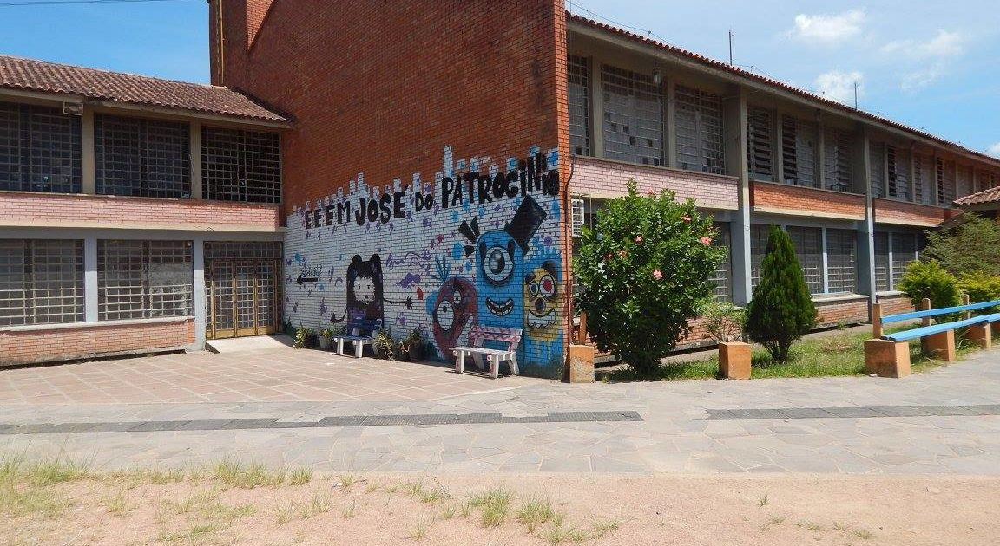
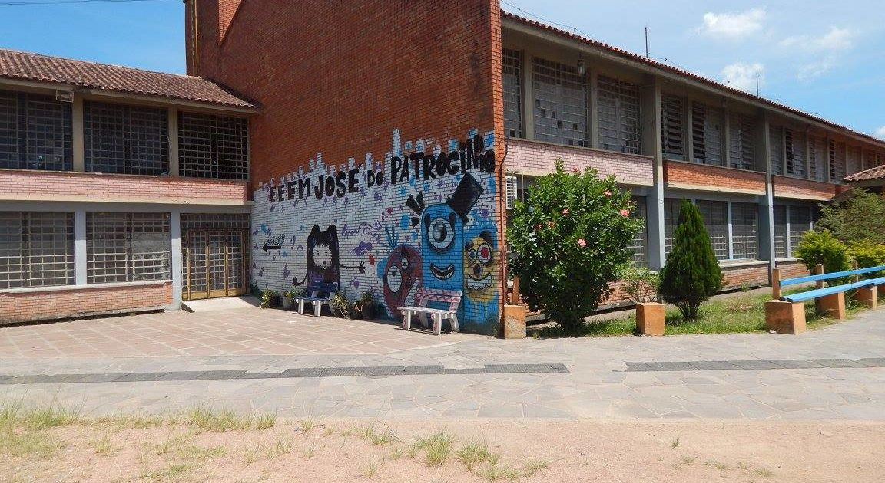

O Caminhos do Saber é um projeto da SEDUC-RS criado para garantir que materiais escolares essenciais cheguem a todas as escolas públicas, mesmo nas regiões mais remotas. Unimos logística, educação e solidariedade para construir um futuro com mais qualidade.
Em 2024, o Caminhos do Saber ajudou 33 escolas públicas a receberem materiais escolares essenciais no Rio Grande do Sul, porém o objetivo ainda não foi alcançado, queremos ampliar o alcance do projeto para todo o Brasil, melhorando a qualidade de ensino de todas as escolas públicas.
O que as escolas participantes do projeto dizem sobre ele?
José da Silva – Diretor
"O Caminhos do Saber ajudou a construir o acesso à aprendizagem nas escolas da rede estadual, ajudando a construir um futuro com mais qualidade."
Maria Souza – Professora
"Graças ao projeto, nossos alunos agora têm acesso a materiais fundamentais. Isso faz toda a diferença no dia a dia escolar."
Lucas Andrade – Aluno
"Recebemos cadernos, lápis e mochilas. Antes não tinha tudo isso. Agora posso estudar melhor e com mais conforto."